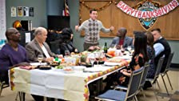

Elenco
- Andy Samberg
- Andre Braugher
- Stephanie Beatriz
- más
Géneros
- Comedias de TV
- Sitcoms
- Series sobre crímenes
Escrito y creado por:
- Michael Schur
- Daniel J. Goor
Este título es:
- Disparatado
Temporada 1
1. Piloto
Cuando el capitán Holt queda a cargo de la estación, el detective Jake Peralta y sus compañeros disfuncionales enfrentarán nuevas exigencias.
21 min
2. El grafitero
Jake llega tarde y, como castigo, deberá resolver un caso por debajo de su nivel.
21 min

3. El bajón
Se apilan los casos sin resolver de Jake, y los demás detectives temen que sea contagioso. Mientras tanto, Amy debe dirigir un programa de jóveneds en riesgo.
21 min
4. Un rato con la forense
El equipo se pone en contra de Jake porque atrasó el informe de la autopsia al coquetear con la médica forense, que termina siendo más de lo que preveía.
21 min
5. El Buitre
Un detective de Delitos Mayores le saca a Jake el caso que estaba por resolver y se lleva los laureles, asi que él buscará vengarse como sea.
21 min
6. Halloween
Amy detesta Halloween. Y aún más cuando tiene que ponerse un disfraz y salir a la calle llena de gente junto a Charles.
21 min
7. 48 Horas
Jake hizo un arresto con pocas pruebas, y ahora él y el equipo tienen 48 horas para juntar evidencias durante el fin de semana... o el delicuente quedará libre.
21 min
8. La vieja escuela
El día soñado de Jake con su ídolo termina convirtiéndose en una pesadilla cuando sus comentarios sobre Holt y la estación policial quedan expuestos.
21 min

9. Pizza de Sal
Cuando la pizzería favorita de Jake se incendia y el jefe de bomberos sospecha del dueño, Jake intenta atrapar al verdadero pirómano, aunque no le corresponda.
21 min

10. Acción de Gracias
Amy invita a todos sus colegas a una cena de Acción de Gracias para wue Holt se convierta en su mentor, pero Holt se va antes con Jake... y la comida es asquerosa.
21 min